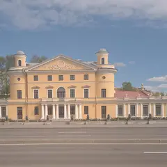

У метро · Север
Куда сходить у метро «Площадь Ленина»
Для 5 мест из нашего каталога ближайшая станция — «Площадь Ленина» (Север): 2 культурных места, 2 места для прогулки и 1 театр. Например, «Летний сад», «Упсала-Цирк» и «Львы у дачи Безбородко». Недорогих, примерно до 1 500 ₽ на человека, — 3. 2 готовых плана проходят через эту станцию — например, «Летний сад и гастробар у кирхи», с маршрутом пешком между точками.
- 5 мест
- 2 плана
Места у метро «Площадь Ленина» 5
наб. Кутузова, 30
Новое
Старейший регулярный сад города: мраморные статуи, фонтаны и знаменитая ограда у Невы. Осенью аллеи особенно хороши.
Подробнее и маршрут: Летний садПозвать сюда: Летний сад
Фото: Anastasia Galyamicheva, CC BY-SA 4.0 · Wikimedia Commons
Свердловская наб., 44Ю
Новое
Цирк-шапито с социальной миссией: современный цирк, клоунада и спектакли для взрослых.
Подробнее и маршрут: Упсала-ЦиркПозвать сюда: Упсала-Цирк
Фото: Екатерина Борисова, CC BY-SA 4.0 · Wikimedia Commons

Свердловская наб., 40
Новое
Двадцать девять сидящих львов держат в пастях тяжёлые цепи, образуя ограду усадьбы над Невой; за ними — отреставрированный особняк. Тёплый свет — на закате.
Подробнее и маршрут: Львы у дачи БезбородкоПозвать сюда: Львы у дачи Безбородко
Фото: Никонико962, CC BY-SA 4.0 · Wikimedia Commons
Арсенальная наб., 13/1
Новое
Небольшой зал на Неве с концертами классики, джаза и романсов по вечерам.
Подробнее и маршрут: Концертный зал «У Финляндского»Позвать сюда: Концертный зал «У Финляндского»
Пироговская наб., 5/2
Новое
Концертный клуб у Невы на Выборгской стороне: группы, оркестровые шоу, вечеринки.
Подробнее и маршрут: Aurora Concert HallПозвать сюда: Aurora Concert Hall


Готовые планы 2
- Летний сад · Сад · м. Площадь Ленина
- 14 минут пешкомDuo Gastrobar · Гастробар
Мраморные статуи и аллеи старейшего сада города, а дальше 14 минут пешком по тихим улицам к маленькому гастробару, с которого началась новая ресторанная волна Петербурга.
Открыть план: Летний сад и гастробар у кирхиПозвать сюда: Летний сад и гастробар у кирхи
Фото: Anastasia Galyamicheva, CC BY-SA 4.0 · Wikimedia Commons
- Упсала-Цирк · Цирк · м. Площадь Ленина
Цирк-шапито с социальной миссией: клоунада и спектакли для взрослых — смешно, трогательно и совсем не похоже на привычный цирк.
Открыть план: Современный цирк в шапитоПозвать сюда: Современный цирк в шапито
Фото: Екатерина Борисова, CC BY-SA 4.0 · Wikimedia Commons
Как позвать
- Выбери план, место или событие — в карточке адрес, цены и маршрут в Яндекс Картах.
- Нажми «Позвать сюда» — соберётся приглашение-игра для свидания или голосование для компании.
- Отправь ссылку в любой мессенджер: тебе ответят, а компания отметит, куда и когда может. Бесплатно и без регистрации.